01 Introducción
Oceanografía dinámica I
Del curso
Instructorxs
Profesora: Karina Ramos Musalem (kramosmu@cicese.mx)
Profesor: Manuel López (malope@cicese.mx)
Ayudante: Alejandro Dominguez Guadarrama (adomingu@cicese.edu.mx)
Horario
Clases
- Lunes 8:30-10:30
- Miércoles 8:30-10:30
- Viernes 9:00-10:20 (“laboratorio”)
Laboratorio incluye algunas demostraciones experimentales y prácticas numéricas con jupyter notebooks.
Dudas por correo, en el cubículo o en Classroom para que todes participemos :-)
Temario del curso
Pueden consultar el temario en classroom.
- Folder “Bibliografía” en Classroom
- Les iremos indicando las referencias principales de cada tema a lo largo del curso.
Evaluación
Tareas 45%
Parciales 45%
Exposición de artículo 10%
Tareas: Habrá aproximadamente 7 en el semestre (~ 1 cada 2 semanas). Se entregan individualmente. Las prácticas de python cuentan como parte de la tarea correspondiente a esa semana.
Parciales: Habrá al menos dos exámenes parciales. El twist es que 80% de su calificación será del examen individual y 20% del examen en equipo (En mi examen).
Exposición de un artículo: - Más detalles pronto
Código de conducta
Decidamos entre todes las reglas de convivencia del curso (pizarrón).
Introducción
Esta clase es de dinámica del océano, pero en general veremos conceptos que aplican a flujos geofísicos en general.
¿De qué hablamos cuando hablamos de flujos geofísicos?
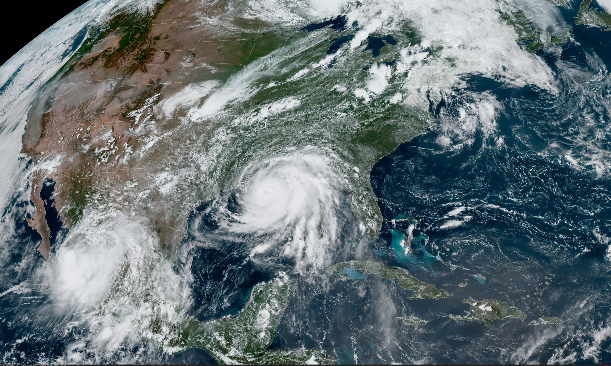
Características de los fluidos geofísicos (FG)
- Se encuentran en un sistema de referencia en rotación;
- por lo regular están estratificados y son turbulentos;
- En la naturaleza ocurren a “gran escala” (en un momento definiremos “gran”).
Este curso tratará de las peculiaridades que aparecen en la dinámica del flujo debidas a la influencia de una, otra o ambas características.
Otros ejemplos
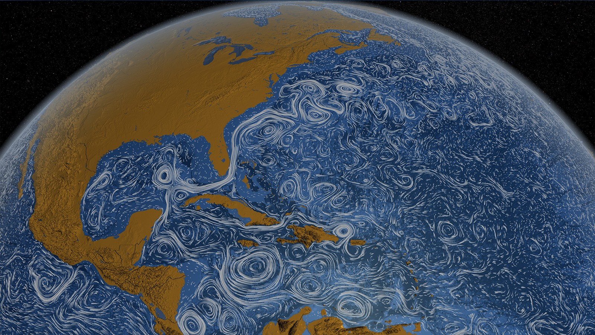
Estructuras de mesoescala (ciclones, tiempo oceánico) y submesoescala (remolinos, frentes, surgencias, etc).
Productividad biológica
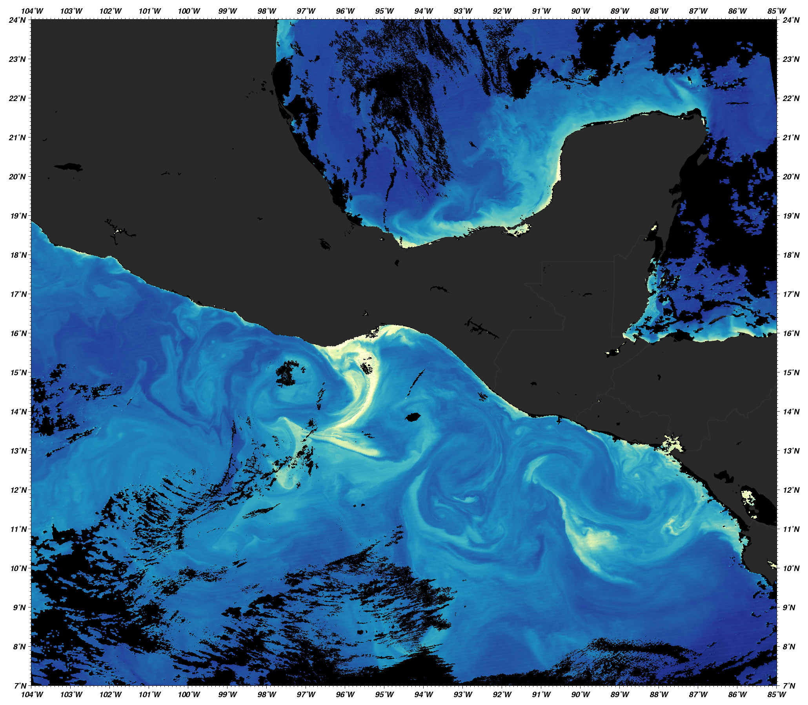
Efecto de la estratificación
La estratificación es la variación vertical de la densidad.
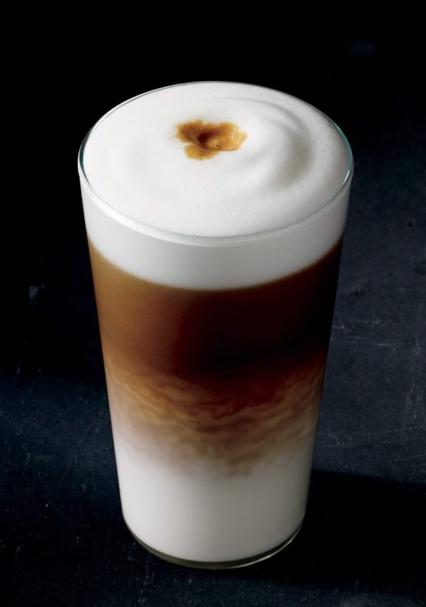
Frecuencia de Brunt-Väisälä
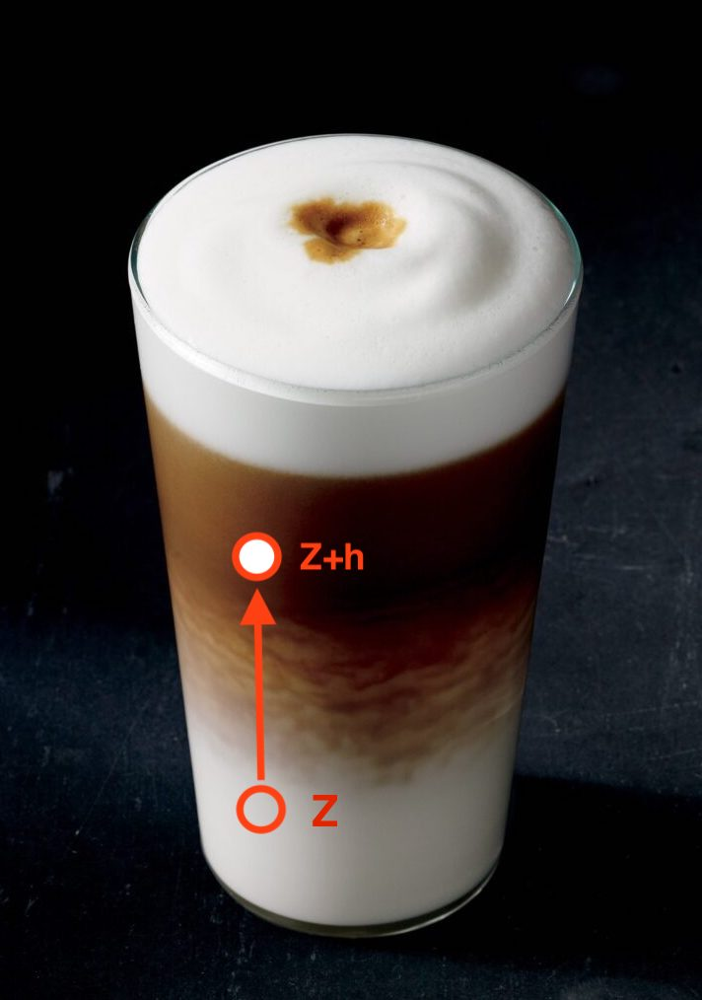
Muevo elemento de fluido en equilibrio de \(Z\) hasta \(Z+h\) \(\rightarrow\) fuerza boyante
La frecuencia de oscilación1 del elemento de fluido está dada por: \[N^2=\frac{g}{\rho_0}\frac{\partial{\rho}}{\partial z}\]
\(\uparrow N^2\) inhibe movimientos verticales y da estructura vertical al flujo.
Efecto de la rotación
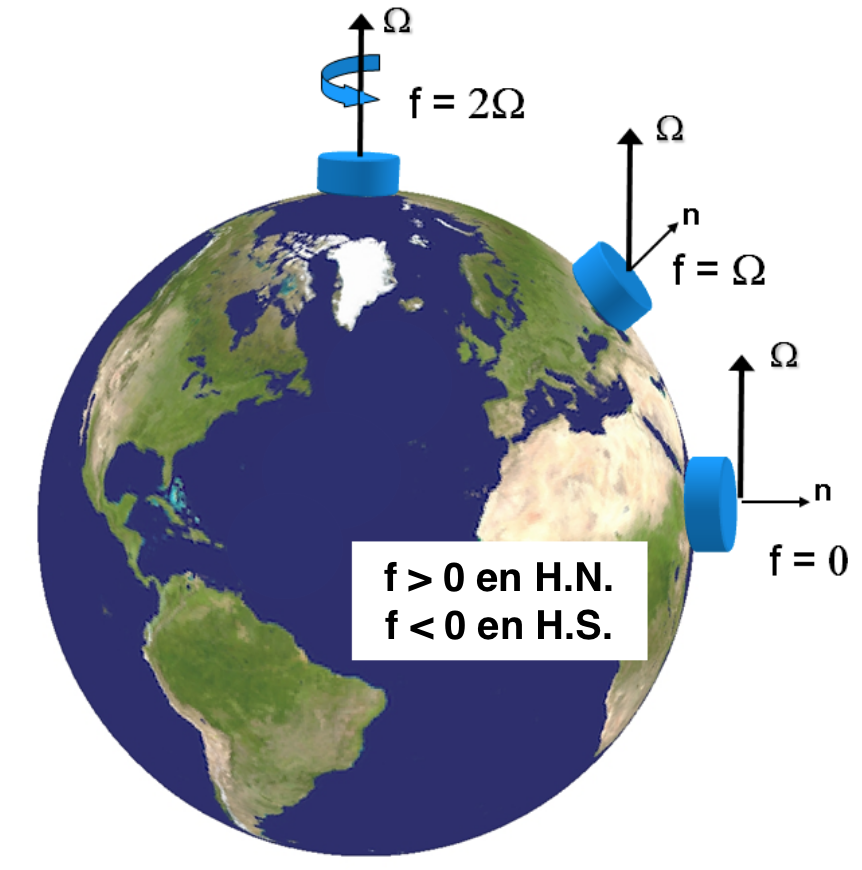
\(\Omega=7.2921\times10^{-5}\) rad s\(^{-1}\)Agrega el término \(2\vec{\Omega} \times \vec{u}\) a las ecuaciones de momento.
Flujos tienden a desviarse a la derecha en el hemisferio norte y a la izquierda en el hemisferio sur.
Parámetro de Coriolis
\[f=2\Omega\sin{\varphi},\] donde \(\varphi\) es la latitud.
Por ejemplo:
En Huatulco (\(\varphi=17.09^{\circ}\) N), \(f=4.28\times10^{-5}\) s\(^{-1}\)
En Ensenada (\(\varphi=30.90^{\circ}\) N), \(f=7.47\times10^{-5}\) s\(^{-1}\)
Efecto de la rotación
Para que el flujo sienta el efecto de la rotación, las escalas temporales deben ser del orden de un periodo de rotación.
\[ \epsilon = \frac{\textrm{tiempo de una revolución}}{\textrm{tiempo en avanzar } L \textrm{ a velocidad } U} \] \[= \frac{\frac{2\pi}{\Omega}}{\frac{L}{U}} = \frac{2\pi U}{\Omega L}.\]
Si \(\epsilon \le 1\), la rotación es importante. Esto limita el tamaño y velocidad del flujo y nos da una definición de “gran escala”.
Nombre especial de \(\epsilon\): Número de Rossby en forma \(Ro=U/fL\).
Similaridad dinámica
¿Por qué podemos estudiar la atmósfera, el océano y un tanque con las mismas ecuaciones?
\[\frac{\partial\vec{u}}{\partial t}+ \vec{u}\cdot\nabla\vec{u} + \vec{f}\times\vec{u} = \frac{1}{\rho} \nabla P - \vec{g} + \mu \nabla^2\vec{u}\]
Ej. Para que la rotación importe, \(Ro=U/fL<1\):
Tierra \(f\) ~ \(10^{-4}\) s\(^{-1}\)
Océano: \(L\sim10^3\) km, \(U\sim10\) cm s\(^{-1}\), \(Ro\sim10^{-2}\)
Atmósfera: \(L\sim10^4\) km, \(U\sim10\) ms\(^{-1}\), \(Ro\sim10^{-3}\)
Plataforma giratoria \(f\) ~ \(10^{-1}\) s\(^{-1}\)
Laboratorio: \(L\sim1\) m, \(U\sim10^{-2}\) cm s\(^{-1}\), \(Ro\sim10^{-1}\)
Similaridad dinámica
Para que dos flujos sean físicamente equivalentes o análogos deben tener similaridad dinámica (cinemática y geométrica).
La importancia relativa entre distintos tipos de fuerza (e.g., inerciales, viscosas, etc.) debe ser la misma para ambos flujos.
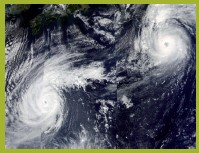
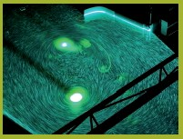
Habrá similaridad dinámica si…
…los grupos adimensionales de ambos flujos son iguales.
Algunos ejemplos de números adimensionales relevantes:
Rossby
rotación vs. advección
\(Ro=\frac{U}{fL}\)
Burger
rotación vs. estratificación
\(Bu=\frac{NH}{fL}\)
Reynolds
inerciales vs. fricción
\(Re=\frac{UL}{\nu\_E}\)
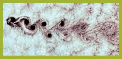
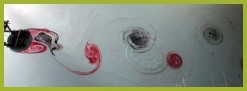
DFG en el laboratorio
Rotación: Plataforma o mesa giratoria
Estratificación: Distintas concentraciones de sal o gradientes de temperatura
Medio: Usamos agua en vez de aire para modelar tanto océano como atmósfera (nunca he visto un túnel de viento giratorio, pero ¿tal vez sí hay?).
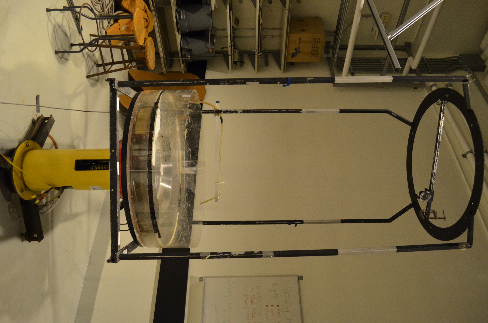
DFG con simulaciones numéricas
En general discretizamos el dominio de interés y las ecuaciones de movimiento y termodinámica usando diferencias finitas o volumen finito (entre otras).
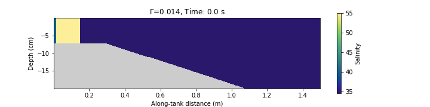
La DFG se trata de representar matemáticamente e interpretar físicamente el movimiento de flujos geofísicos.
Las matemáticas de la DFG son muy “computacionales” (Ej. modelación numérica de la circulación oceánica y las nubes son los problemas computacionales más grandes en la historia de la ciencia)
Esto se debe a que los experimentos de laboratorio solo pueden responder algunas de las preguntas interesantes.
En geofísica muchos de los avances teóricos están basados en DFG y no en experimentos porque obtener mediciones en campo es complicado, caro y muchas veces imposible.
¿Por qué estudiar dinámica del oceáno?
Los océanos son el motor del clima y los sistemas meteorológicos de la Tierra.
Entender la dinámica oceánica ayuda a:
- Predecir corrientes y ondas en el océano.
- Gestionar pesquerías y ecosistemas.
- Mitigar los impactos del cambio climático.
Geostrofía: El Balance de Fuerzas
Concepto
- Balance entre la fuerza de Coriolis y el gradiente de presión.
- Genera corrientes a gran escala.
- Giros ciclónicos o anticiclónicos, diámetro típicamente entre 50–200 km, importantes en el transporte de calor y nutrientes.
Ejemplo de la Vida Real
Remolinos de la Corriente del Lazo
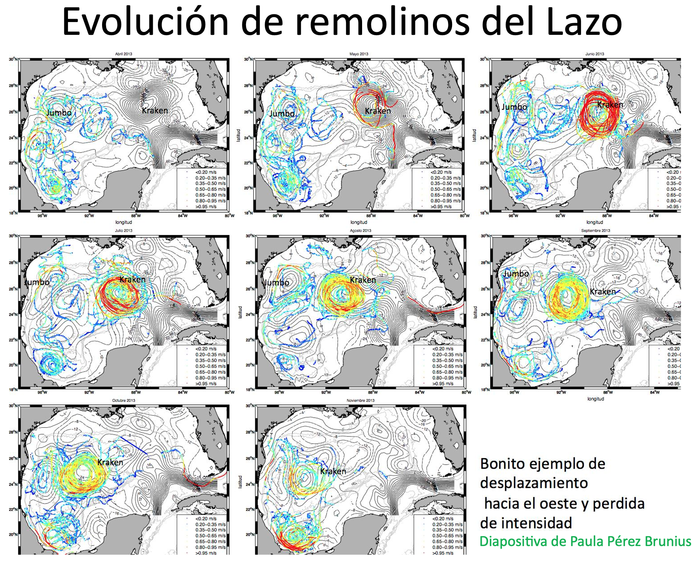
Oscilaciones Inerciales
Concepto - Movimientos circulares de partículas de agua debido a la fuerza de Coriolis, sin fuerzas restauradoras.
Ejemplo de la Vida Real
- Respuesta a Ciclones en el Golfo de México: -Tras eventos como huracanes la capa superficial oscila en sentido de las manecillas del reloj.
- Esta energía puede progagarse al interior en el borde de remolinos o en la corriente del Lazo.
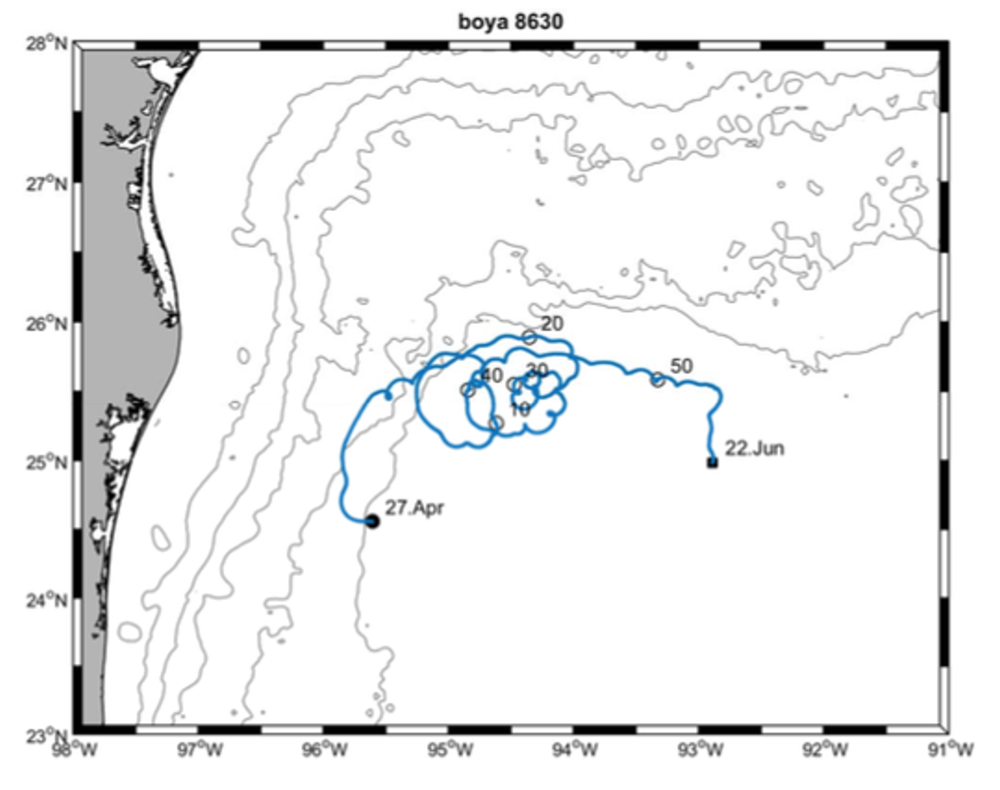
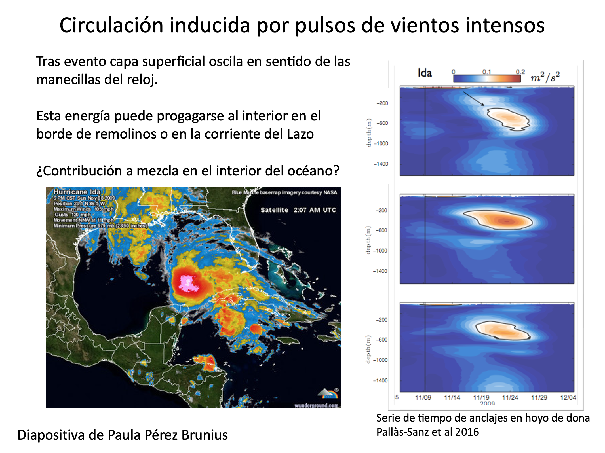
Ondas de Kelvin: Mensajeras Costeras
Concepto
- Ondas no dispersivas atrapadas a la costa o al ecuador debido a la rotación de la Tierra.
Ejemplo de la Vida Real - El Niño y el Pacífico Mexicano: - Las ondas de Kelvin suprimen la termoclina propiciando la aparición de aguas anómalamente cálidas en las costas del Pacífico durante eventos de El Niño, afectando la pesca y provocando lluvias intensas en México.
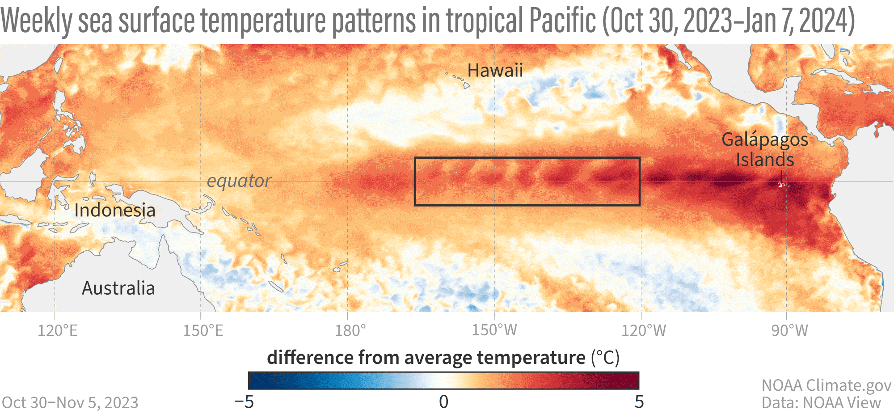
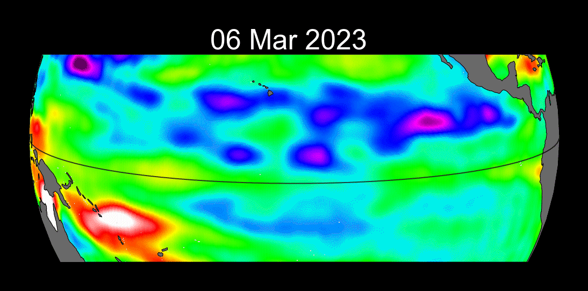
Ondas Internas
Concepto
- Ondas que se propagan dentro del océano debidas a los cambios de densidad en el océano.
** Ejemplo de la Vida Real**
- Ondas Internas en el Golfo de California:
- Generadas por la interacción de las mareas con la topografía submarina, contribuyen al transporte de nutrientes hacia la superficie y sostienen pesquerías como la sardina y el camarón.
Animación de MIT ondas internas en el estrecho de Luzón (mar del Sur de China)
Experimento en la Universidad de Washington:
Consecuencias sociales
La dinámica del oceáno es central para resolver los desafíos globales actuales.
Corrientes Geostróficas: Redistribuyen el calor entre el ecuador y los polos.
- Estabilizan las temperaturas globales.
- Influyen en climas regionales, por ejemplo, los inviernos suaves en Europa debido a la Corriente del Golfo.
Oscilaciones Inerciales: Ofrecen información sobre la redistribución de energía tras huracanes.
- Predicción de erosión costera y daños en infraestructura.
- Apoyo en la recuperación post-desastre.
Ondas Internas: Potencial de llevar nutrientes desde las capas profundas a la superficie.
- Sostienen pesquerías y ecosistemas marinos.
Remolinos de Mesoscala: Pueden influir en la mezcla vertical
- Secuestro de carbono.
- Redistribución de calor y nutrientes.
Dinámica Oceánica en Modelos Climáticos:
- Simular con precisión intercambios de calor, el aumento del nivel del mar y los retroalimentación climática.
- Orientar políticas climáticas internacionales (e.g., Acuerdo de París).
Sus Perspectivas
- ¿Cómo puede el entendimiento de la dinámica oceánica ayudar a nuestra comunidad localmente?
- ¿Qué tema te emociona más? ¿Por qué?
Referencias
Cushman-Roisin y Beckers - Capítulos 1 y 11.

7 de enero de 2026